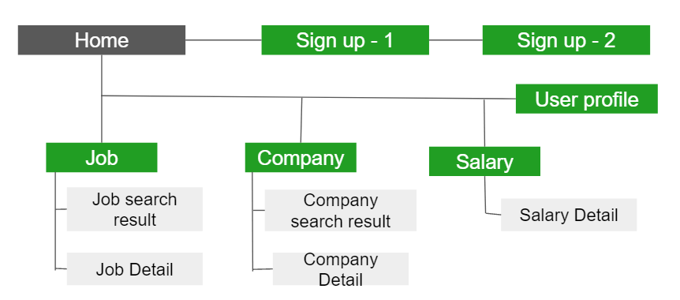

First-Gen Job
Job Search Web | UX|UI Designer | Course Project
Project Overview
First-gen Job is a job search tool to help first-generation immigrants. First-gen Job’s primary target users include people who are just come to the U.S. and have language embarrassment and people who came to the U.S. for a little while but still have difficulty assimilating into society.
Understanding the user
Problem:
The United States has a larger immigrant population, about 14.4% of the United States population are immigrants. Most immigrants came to the U.S. looking for a better life. However, there are many difficulties in their way of finding a job, such as a language or trade unfairly in the job place.
Solution:
Design an app that will help first-generation immigrants to find a job and help them to know if they are traded fairly in the workplace.
Persona:
Milo is a college student of first-generation immigrants who needs to find a part-time job because she needs money for her college tuition and helps her parents in their store at the same time.

The Design
Wireframes:
After brainstorming, I decided that the home page needs to have these elements: the logo, the search bar, navigation, user portfolio, the job recommendation area, the saved job area, the message icon, the notification icon, and the news and tips area.

After ideating and drafting some paper wireframes, I create the initial designs for the
First-gen Job app. These designs focus on searching for jobs, getting to know the company,
and knowing the salary to help get all the information that need for a job hunt.

The wireframes also include a home page without logging in or signing up and a process of
signing up. In addition, it also has job search results, company pages, salaries page,
and company search results.

Sitemap:

Low-fidelity Prototype:
To prepare for usability testing, I create a low-fidelity prototype that connected the user flow of creating an account, searching for a job, and getting to know the company and salary.
View the RKD Game APP lo-fi here.Refining the design
Usability Study:
To better understand if the product meets users' needs, I conduct an usability
study that has 6 participants of different gender aged 24 to 48 who are first-generation
immigrants. Each section is about 30-50 minutes long. After watching and having a deep
conversation with the participants, I realized a major mistake I had made.
In the previous research, the focus was on young generation immigrants who had gone to
school in the United States, but there is a large percentage of first-generation immigrants
who come to the U.S. in their mid-age and have more difficulty than the young generation.
After collecting and reviewing the feedback, I realized that a lot of first-generation
immigrants have language problems, and they would like to work with people who have the
same background as them. Moreover, a lot of them focus on a job that does not require an
educational background.Also, they also worried about if their employer will trade them
equally because they do not fully understand the employment law in this new country.
Based on the feedback, I create another persona to rich out the user's character.
Eiji is a new immigrant who needs to find a full-time job as a product manager because he needs to provide a quality lifestyle for his family.
Next, I summarized the feedback into three insights.
Insights:
1. Sign Up Process: The users want an easy sign-up process and add detailed information later on by using a user profile.
2. Search: The users want to add an advantage search that can limit the results.
3. Salary and Company information: The users preferred to have more information related to salary and company.
Mockup:
Based on the insights from the usability studies, I applied design changes like a short
and easy sign-up process and letting users add their detailed information, education,
and work experience, to their user profile.
Additional design changes included adding an advantage search by hovering the mouse to the arrow.
The full mockup is shown below:

High-fidelity Prototype:
View the RKD Game APP hi-fi here.
Final
What I learned:
The participants of the initial user interview are all of the young generations which did not include the older generation. These two age ranges have very different user pain points which cause the first version did not solve the user pain points. This leads me to change a lot of detail in the project. Therefore, I learned that good user research is very important at the beginning.
Next Step:
1. Conduct a usability study for a hi-fi prototype.
2. Add more educational resources for users to learn about new skills to get a job.
3. Add employer site to post the jobs.